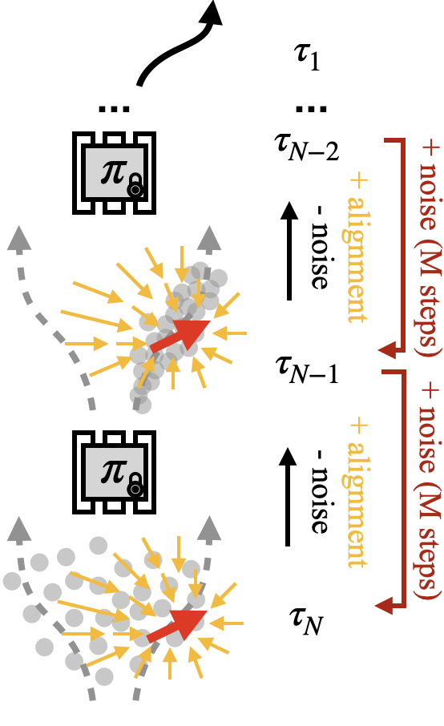

|
User input (sketch or physical corretions) drives the agent (red) around in real-time (click-n-drag the mouse). OP maximizes policy alignment at the cost of potential distribution shift. Predictions in collision turn white. |
Exploring the learned motion manifold of ACT |
Exploring the learned motion manifold of DP |
|
User input (point or sketch) is used to rank policy outputs by L2 similarity. PR introduces minimal distribution shift but only improves alignment if there already exists aligned samples in the unconditional predictions. |
As seen above, ACT does not produce a diverse set of predictions, leading to limited alignment improvement with PR. DP, however, exhibits higher degree of distribution multimodality and constraint satisfaction after being driven to OOD locations. Hence, PR can improve alignment, but not modify unconditional samples to be more similar to user input. |
PR selects the best DP output based on sketch |
|
User input (point or sketch) is used to initialize the initial noise distribution (instead of Guassian) for a DP. Similar to PR, BI offers user limited control as the diffusion sampling process is still unconditional. |
BI biases the noise distribution input of DP |
|
User input (point or sketch) is used to guide the diffusion process with gradients of L2 similarity between the user input and the policy output. Different from PR and BI, GD can discover new trajectories close to user input that do not necessarily live on the original motion manifold (see stacking experiments). Hence, there is no guarantee that the execution will still staisfy the original constraints and be successful eventually. |
GD guides sampling with gradients of L2 similarity |
|  |
SS is an improved version of GD that can generate trajectories closer to user input while maintaining the original motion constraints. Repeating each guided diffusion step M steps by adding back noise in a MCMC style effectively samples the correct gradients (direct adding denoising and alignment gradients in GD is in fact mathematically incorrect) of the composed distribution (original policy distribution composed with inference-time user objectives). |
SS achieves the best alignment-constraint satisfaction trade-off. |